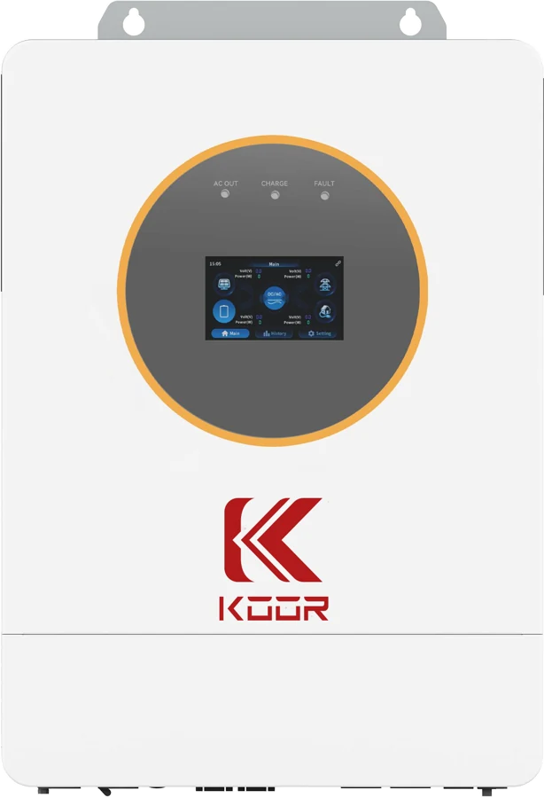
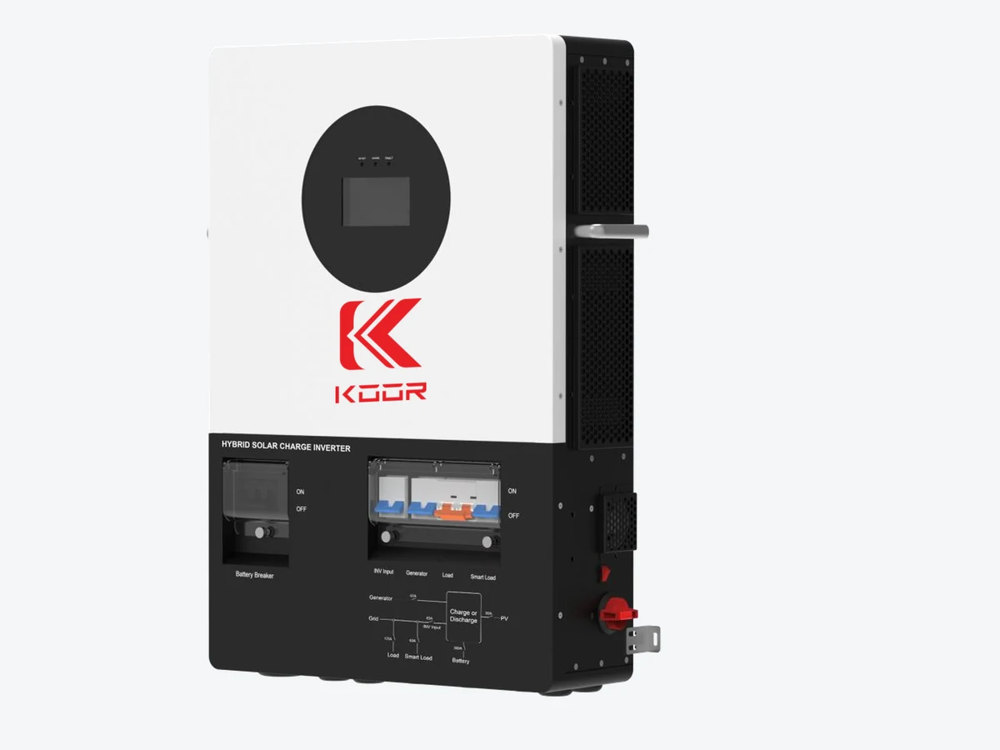

KOOR 12K Off-Grid Inverter / Charger
KR-A12US · KR-L12K-SP-BP (with built-in breakers)
12 kW of split-phase power on batteries alone, with two solar charge controllers built in. Hangs on the wall at 52 pounds.
- 12 kWcontinuous, 120/240 V split phase
- 18 kVA surgestarts a 6 HP motor
- 2 MPPT · 500 V12 kW of solar, charge controllers built in
- 220 A solar chargeplus 160 A from a generator
- 52 lbone man hangs it
- 5 yearswarranty from Fantastech
What it is
The KOOR 12K is a true off-grid inverter/charger. No grid needed: it makes 12 kW of split-phase 120/240 V from a 48 V battery bank and charges that bank straight from the panels through two built-in MPPT charge controllers. A generator input charges at up to 160 A when the sun is short.
It is the value pick for a well pump, a shop, a cabin or a barn that is never going on the grid. Six can run in parallel for 72 kW.
Two versions: the standard KR-A12US, and the KR-L12K-SP-BP with the PV, battery and AC breakers built into the cabinet so the install needs fewer boxes on the wall.
Specifications
Read off the manual on file. Model columns run in the order listed above.
| Output | |
|---|---|
| Rated output power | 12,000 W split phase 120/240 V (7,200 W on a single 120 V leg) |
| Peak power | 18,000 VA — starts a 6 HP motor |
| Waveform | pure sine, 60 Hz (50 Hz selectable) |
| Efficiency | over 91 % in inverter mode, over 95 % on mains |
| Transfer time | 10 ms typical |
| Parallel | up to 6 units — 72 kW |
| Solar (PV) input | |
| MPPT trackers | 2 |
| Max PV open-circuit voltage | 500 V DC |
| MPPT range | 90 – 450 V DC (operating range 90 – 485 V) |
| Max current per tracker | 22 A (KR-A12US) · 27 A (KR-L12K-SP-BP) |
| Max array | 12 kW total, 6 kW per tracker |
| Solar charge current | 220 A (KR-A12US) · 250 A (KR-L12K-SP-BP) |
| Battery | |
| Battery type | 48 V lithium or lead-acid, every set point adjustable on screen |
| Voltage range | 40 – 58.6 V DC; 44 V minimum to start |
| AC charge current | up to 160 A, adjustable |
| AC / generator input | |
| Input voltage | 120 / 240 Vac split phase, 85 – 140 V per leg |
| Frequency | 50 / 60 Hz auto-detect |
| Pass-through | 63 A per leg (KR-A12US) · 200 A pass-through with 63 A generator input (KR-L12K-SP-BP) |
| Physical | |
| Installation | indoor wall mount; no outdoor or wet-location rating |
| Operating temperature | −10 °C to 55 °C (14 °F to 131 °F); derates above 45 °C |
| Cooling | forced air, variable speed, under 60 dB |
| Size and weight | KR-A12US: 620 × 450 × 132 mm, 23.8 kg (52 lb) · KR-L12K-SP-BP: 710 × 485 × 145 mm, 37.5 kg (83 lb) |
| Display and monitoring | OLED touch screen; Wi-Fi dongle included, phone app |
| Certification and warranty | |
| Safety | No third-party safety certificate on file; FCC Part 15 Class B. Confirm what your inspector requires before specifying on a permitted job. |
| Warranty | 5 years — see the warranty page |
In the box
- Inverter
- Wall-mount bracket and hardware
- Wi-Fi monitoring dongle
- PV connectors
- User manual
Up close

Downloads
Questions we get
What is the difference between the two versions?
Same inverter. The KR-L12K-SP-BP adds the PV, battery and AC breakers inside the cabinet, 27 A per tracker instead of 22 A, and 250 A of solar charging instead of 220 A. It weighs more — 83 lb against 52.
Will it start my well pump?
It surges to 18,000 VA and is rated to start a 6 HP motor without a soft starter.
Can it use the grid?
It is an off-grid unit. It will take grid or generator power on its AC input to charge the batteries and pass power through, but it does not sell power back or synchronize as a grid-tie inverter. For that, see the All-in-One.
How cold can the room get?
It runs from −10 °C to 55 °C (14 °F to 131 °F). An unheated shed in a northern winter can go below that. Give it a heated space or a well-insulated room.
How much solar can I put on it?
12 kW total, 6 kW per tracker, 500 V maximum open-circuit voltage. Keep the string inside the 90 – 450 V tracking window for best harvest.
Is it UL listed?
No. There is no third-party safety certificate on file for the KOOR 12K Off-Grid. Ask your inspector what he needs before specifying it on a permitted job.
What is the warranty?
5 years from Fantastech Energy Solution LLC.